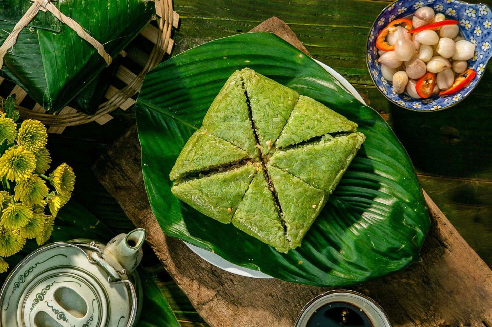

Bộ lọc
- Kiểu món
- Món chính
- Món chay
- Món mặn
- Tráng miệng
- Ăn vặt
- Quốc gia
- Việt Nam
- Trung Quốc
- Hàn Quốc
- Ý
- Mỹ
- Nguyên liệu
- Bò
- Gà
- Trứng
- Sữa
- Gạo
- Độ khó
- Khó
- Trung bình
- Dễ
BÁNH CHƯNG

NGUYÊN LIỆU
- 6-8 lá dong
- 500-600g gạo nếp
- 150-200g đậu xanh cả vỏ
- 150-200g thịt ba chỉ
- 1-2 thìa cà phê muối
- 1-2 thìa cà phê tiêu xay (tùy vị)
- 4-6 sợi dây lạt buộc
HƯỚNG DẪN
Khẩu phần: 2-3 người
-
Chuẩn bị nguyên liệu
- Rửa lá dong, lau sạch và hơ sơ cho lá mềm dễ gói
- Ngâm gạo nếp 6–8 giờ, trộn chút muối
- Ngâm đậu xanh 4–6 giờ, hấp chín rồi giã nhuyễn, trộn muối tiêu
- Thịt ba chỉ cắt dải dày 2–3 cm, ướp muối + tiêu
-
Gói bánh
- Xếp lá dong thành khuôn vuông
- Cho 1 lớp gạo nếp phía dưới
- Thêm đậu xanh dàn đều
- Đặt thịt ở giữa
- Phủ tiếp đậu và gạo nếp lên trên
- Gấp lá thật chặt và buộc dây vuông vắn
-
Luộc bánh
- Xếp bánh gọn trong nồi lớn, đổ nước ngập mặt bánh
- Luộc 10–12 giờ với lửa vừa
- Trong quá trình luộc cần châm thêm nước sôi nếu cạn
-
Ép bánh và để nguội
- Sau khi vớt bánh, dùng vật nặng ép 1–2 giờ giúp bánh chắc và vuông đẹp
- Để ráo và nguội hẳn trước khi cắt
MẸO NHỎ
Gạo và đậu nên rửa sạch và ngâm trước 4–8 giờ để khi luộc nhanh chín và bánh dẻo hơn.